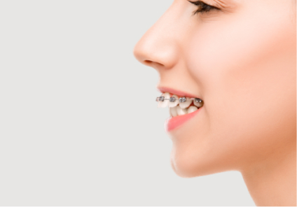
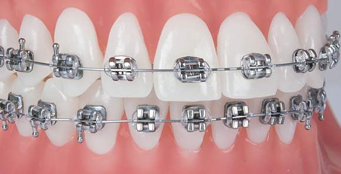
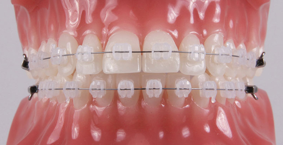
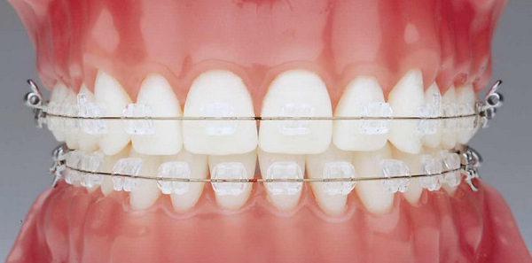
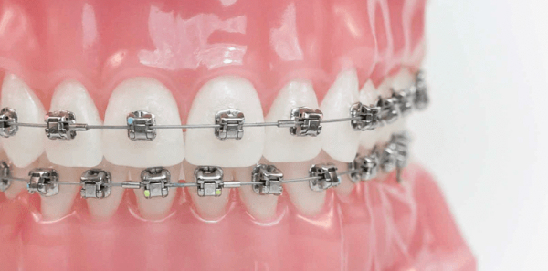

Врач-ортодонт – специализируется на лечении дефектов развития зубов и челюстно-лицевого скелета.
Брекет-система — это ортодонтическая конструкция, которая предназначена для коррекции положения зубов и прикуса в целом. В нашей клинике используются брекеты и сопутствующие ортодонтические материалы, ведущих производителей из США и Италии.

Мы знаем, как сделать ваши зубы ровными и красивыми.
Любой прикус и в любом возрасте.
Быстро, незаметно и доступно.
Какие последствия может иметь неправильный прикус ?
В первую очередь это эстетическая проблема, которая создает дискомфорт многим людям.
Но нельзя забывать и о возможности возникновения проблем со здоровьем, так как неправильно расположенные зубы могут привести к:
Повышенной «стираемости» зубов
Развитию кариеса и болезням десен
Трудностям в пережевывании пищи и напряжению жевательных мышц
Головным болям, болям в области шеи, плечевого сустава и спины.
Металлическая брекет-система:

Преимущества:
Замена проводится безболезненно;
Конструкция прочная;
Устраняют даже серьезные нарушения прикуса;
Не окрашиваются от напитков;
Эффект заметен;
Стоимость ниже в сравнении с керамическими аналогами.
Даже если природа не наградила хорошими зубами, можно обзавестись привлекательной улыбкой. Помочь в этом могут металлические брекеты – эти ортодонтические скобы стали первыми применяться в стоматологии и сегодня они способствуют решению сложных проблем. Первая система была достаточно громоздкой и создавала дискомфорт во время ношения. Сейчас они уменьшены в весе и при этом не потеряли свою надежность, а также сохранилась конструкция:
Металлические брекеты - хорошо фиксируются на зубах, являются эффективными и надежными, удобны в индивидуальном использовании
Брекеты металлические практически невозможно сломать, но кроме этого они имеют и другие преимущества:
Керамическая брекет-система:

Преимущества:
Прочность;
Эффективность;
Эстетичность.
Керамические брекеты являются современной системой, позволяющей проводить качественную коррекцию любого прикуса без относительного ущерба для внешнего вида. А все потому, что керамика – это материал, имеющий матовую структуру и уникальный оттенок. Керамическая брекет-система позволяет подобрать такую расцветку, которая будет очень гармонично сочетаться с зубами пациента.
Cапфировая брекет-система:

Преимущества:
Очень прочная. В противовес эстетическим видам брекетов – керамике и пластмассе, она выдерживает большие нагрузки. Все благодаря кристаллической решетке;.
Не придает зубам желтизну. Керамические брекеты, как правило, имеют ряд стандартных светлых оттенков. В сравнении с ними естественный цвет зубов может казаться желтоватым. С кристаллическими конструкциями такого не будет – они прозрачные;
Незаметна на фоне эмали. Прозрачная структура камня ставит систему вне конкуренции по сравнению с другими эстетическими конструкциями, не говоря о классике выравнивая – металле;
Это практически незаметная на зубах брекет-система классического типа. За счет близкого к натуральной эмали цвету, она позволяет исправить даже сложные зубные дефекты и дефекты прикуса без дискомфорта, который возникает при ношении классических брекетов.
Самолигирующие брекеты:

Преимущества:
Лечение самолигирующими брекетами не требует удаления постоянных зубов, так как самолигирующие брекеты дают большие возможности для адаптации задних отделов зубной дуги.;
Лечение самолигирующими брекетами требует меньше активаций - меньшего количества посещений врача.
Самолигирующие брекеты более комфортные для пациентов.
Самолигирующие брекеты (синонимы: безлигатурные, самолигируемые) — это один из современных видов брекет-систем. Если Вы задумались о лечении самолигирующими брекетами, значит Вы уже были на консультации ортодонта. Значит, Вы уже знаете, что самолигирующие брекет системы обладают рядом преимуществ, перед классическими лигатурными. Возможно, у Вас сложный клинический случай и самолигирующие системы — это единственный способ лечиться без удаления зубов. Эта статья посвящена безлигатурным брекетам и строится на многолетнем опыте работы с брекет системами.
Процесс установки брекет-систем
Само лечение занимает несколько этапов и может растягиваться на достаточно длительный период. Потребуется несколько посещений клиники, чтобы провести: диагностику пациента. Врач проводит исследования, включающие рентгеновский снимок челюсти и визуальную оценку состояния зубов.
Именно в этот момент вырабатывается методика дальнейшего лечения, и устанавливаются сроки ношения брекетов. Также определяются наиболее подходящие пациенту брекеты. После этого начинают подготовку к установке брекетов. Основной момент этого этапа – лечение и профилактические работы с проблемными зубами: лечение заболеваний (например, кариеса или пульпита); эстетические процедуры (такие, как фторирование, отбеливание, очистка от отложений); оперативное вмешательство (удаление зубов, пластика). Естественно, что данные процедуры не являются обязательными. Но в случае возникновения зубных болей или необходимости других работ, провести их с уже установленными брекетами крайне сложно.
На следующем этапе выполняется изготовление системы по ранее определенным расчетам и установка брекетов в ротовую полость. Факторов, влияющих на продолжительность ношения для полной коррекции зубов, множество, от сложности дефекта челюсти до возраста пациента. В среднем это занимает около одного-двух лет при регулярном посещении врача не реже раза в месяц для проверки состояния и коррекции направляющей силы брекетной дуги.
Восстановление после брекет-системы
Данный период также называется ретенционным, и нужен для того, чтобы зубы не вернулись в прежнее положение. Сами брекеты снимаются, а на их место устанавливается другое приспособление – каппа, пластинка либо ретенционный аппарат. В большинстве случаев, восстановительный период составляет почти в два раза больший срок, чем ношение брекетной системы, т.е. около двух лет.
Если хотите установить систему, но не можете выбрать, какие именно вам нужны брекеты, фото различных систем помогут вам сравнить их эстетические характеристики и сделать свой выбор. Материалы, из которых изготавливают брекеты, всегда соответствуют мировым стандартам и являются безопасными для здоровья пациента. Если вы все еще сомневаетесь, то должны знать - современные брекет системы не влияют на язык или процесс пищеварения.